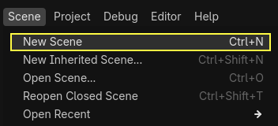
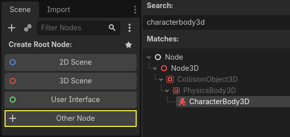
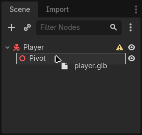
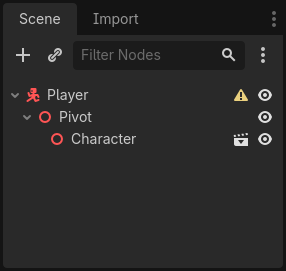
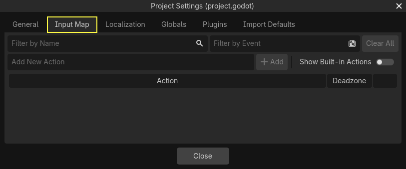
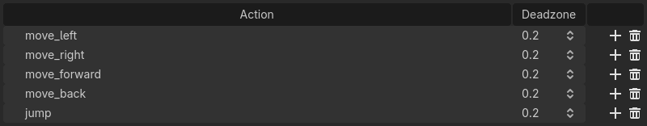
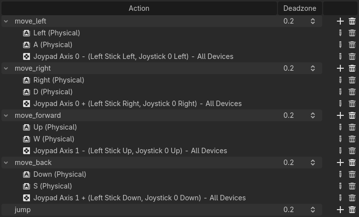
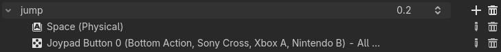

Scene người chơi và các input action
Trong hai bài học tiếp theo, chúng ta sẽ thiết kế scene người chơi, đăng ký các input action tùy chỉnh và viết mã cho chuyển động của người chơi. Khi kết thúc, bạn sẽ có một nhân vật chơi được, di chuyển theo tám hướng.
Tạo một scene mới bằng cách vào menu Scene ở góc trên bên trái và nhấp New Scene.

Nhấp nút Other Node và chọn kiểu node CharacterBody3D để tạo một CharacterBody3D làm node gốc.

Đổi tên CharacterBody3D thành Player. Character body bổ sung cho area và rigid body đã dùng trong bài hướng dẫn game 2D. Giống rigid body, chúng có thể di chuyển và va chạm với môi trường, nhưng thay vì được điều khiển bởi physics engine, bạn là người quyết định chuyển động của chúng. Bạn sẽ thấy cách chúng ta dùng các tính năng riêng của node này khi viết mã cho cơ chế nhảy và giẫm bẹp.
Xem thêm
Để tìm hiểu thêm về các kiểu node vật lý khác nhau, xem Giới thiệu về vật lý.
Hiện tại, chúng ta sẽ tạo một rig cơ bản cho mô hình 3D của nhân vật. Điều này cho phép chúng ta xoay mô hình bằng mã sau này trong khi nó đang phát hoạt ảnh.
Thêm một node Node3D làm con của Player. Chọn node Player trong cây Scene và nhấp nút "+" để thêm node con. Đổi tên nó thành Pivot.

Sau đó, trong FileSystem dock, mở rộng thư mục art/ bằng cách nhấp đúp vào nó, rồi kéo thả player.glb vào Pivot.

Thao tác này sẽ tạo instance của mô hình làm con của Pivot. Bạn có thể đổi tên nó thành Character.

Ghi chú
Các file .glb chứa dữ liệu scene 3D dựa trên đặc tả mã nguồn mở glTF 2.0. Chúng là lựa chọn thay thế hiện đại và mạnh mẽ cho các định dạng độc quyền như FBX, vốn Godot cũng hỗ trợ. Để tạo ra các file này, chúng tôi đã thiết kế mô hình trong Blender 3D và xuất nó sang glTF.
Như với mọi loại node vật lý, chúng ta cần một collision shape để nhân vật va chạm với môi trường. Chọn lại node Player và thêm một node con CollisionShape3D. Trong Inspector, ở thuộc tính Shape, thêm một SphereShape3D mới.

Khung lưới (wireframe) của hình cầu xuất hiện bên dưới nhân vật.

Đây sẽ là shape mà physics engine dùng để va chạm với môi trường, nên chúng ta muốn nó khớp hơn với mô hình 3D. Hãy làm nó lớn hơn một chút bằng cách kéo chấm màu cam trong viewport. Hình cầu của tôi có bán kính khoảng 0.8 mét.
Sau đó, di chuyển collision shape lên sao cho đáy của nó gần như ngang với mặt phẳng lưới.

Để di chuyển shape dễ hơn, bạn có thể bật/tắt hiển thị của mô hình bằng cách nhấp vào biểu tượng con mắt bên cạnh node Character hoặc Pivot.

Lưu scene với tên player.tscn.
Khi các node đã sẵn sàng, chúng ta gần như có thể bắt đầu viết code. Nhưng trước tiên, chúng ta cần định nghĩa một số input action.
Tạo các input action
Để di chuyển nhân vật, chúng ta sẽ lắng nghe đầu vào của người chơi, chẳng hạn như việc nhấn các phím mũi tên. Trong Godot, dù có thể viết toàn bộ các phím gán trong code, có một hệ thống mạnh mẽ cho phép bạn gán một nhãn cho một tập hợp phím và nút. Điều này giúp đơn giản hóa script và khiến chúng dễ đọc hơn.
Hệ thống này là Input Map. Để mở trình chỉnh sửa của nó, hãy vào menu Project và chọn Project Settings....

Ở phía trên có nhiều tab. Nhấp vào Input Map. Cửa sổ này cho phép bạn thêm các action mới ở phía trên; chúng chính là các nhãn của bạn. Ở phần dưới, bạn có thể gán phím cho các action này.

Các dự án Godot có sẵn một số action được định nghĩa trước, dành cho thiết kế giao diện người dùng (xem ảnh chụp màn hình ở trên). Chúng sẽ hiện ra nếu bạn bật nút Show Built-in Actions. Chúng ta có thể dùng chúng ở đây, nhưng thay vào đó chúng ta sẽ định nghĩa action riêng để hỗ trợ gamepad. Hãy để Show Built-in Actions ở trạng thái tắt.
Chúng ta sẽ đặt tên các action là move_left, move_right, move_forward, move_back và jump.
Để thêm một action, hãy viết tên của nó vào thanh ở phía trên rồi nhấn Enter hoặc nhấp vào nút Add.

Tạo năm action sau:

Để gán một phím hoặc nút cho một action, hãy nhấp vào nút "+" ở bên phải của nó. Làm điều này cho move_left. Nhấn phím mũi tên trái và nhấp OK.

Gán thêm phím A cho action move_left.

Bây giờ hãy thêm hỗ trợ cho joystick trái của gamepad. Nhấp lại vào nút "+" nhưng lần này, hãy tự chọn input trong cây input. Chọn trục X âm của joystick trái trong mục Joypad Axes.

Để nguyên các giá trị khác ở mặc định và nhấn OK.
Ghi chú
Nếu bạn muốn các tay cầm có input action khác nhau, bạn nên dùng tùy chọn Devices trong Additional Options. Device 0 tương ứng với gamepad được cắm đầu tiên, Device 1 tương ứng với gamepad được cắm thứ hai, và cứ thế tiếp tục.
Làm tương tự cho các input action còn lại. Ví dụ, gán phím mũi tên phải, D và trục dương của joystick trái cho move_right. Sau khi gán xong tất cả các phím, giao diện của bạn sẽ trông như thế này.

Action cuối cùng cần thiết lập là action jump. Gán phím Space và nút A của gamepad nằm trong mục Joypad Buttons.

Input action nhảy của bạn sẽ trông như thế này.

Đó là tất cả các action chúng ta cần cho trò chơi này. Bạn có thể dùng menu này để gán nhãn cho bất kỳ nhóm phím và nút nào trong các dự án của mình.
Trong phần tiếp theo, chúng ta sẽ viết code và kiểm thử chuyển động của người chơi.